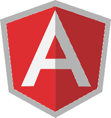
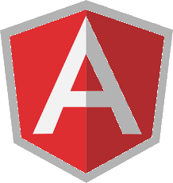

Description :
Utilitaire en ligne de commande de génération de code pour les stacks Spring Boot / Angular
Voici ses fonctions :
Il permet de créer le code de base pour un certain nombre de classes Java. Cela inclue
les controllers, les dtos, les repositorys et les mappers, mais également les enums, les interfaces, les records...
Il permet de créer la structure de base d'un projet Spring Boot en définissant le nom des classes et leurs champs dans
un fichier de configuration à partir d'une ligne de commande.
Il permet de créer des interfaces typescript correspondant aux données envoyées par le back en analysant le code des
Dtos pour en déduire la structure des interfaces typescript
Il permet de créer des services typescript correspondant aux points d'entrées de l'application back en analysant le code
des controllers du back
 
